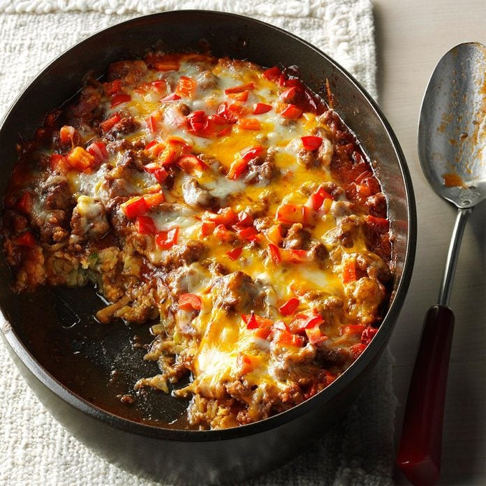

Zucchini Pizza Casserole

Description
It sounds ridiculous to create a pizza out of zucchini, but don't knock this dish before you try it! Crisp zucchini is combined with eggs, meat, and cheese to produce a hearty meal that pleases both veggie and meat lovers!
This meal takes only 20 minutes to an hour to make and serves 8 people with the base recipe. The zucchini has the role of being the base of the dish, so no bread required!
Ingredients
- 4 cups shredded umpeeled zucchini
- 1/2 teaspoon salt
- 2 large eggs
- 1/2 cup grated Parmesan cheese
- 2 cups shredded part-skim mozzarella cheese, divided
- 1 cup shredded cheddar cheese, divided
- 1 pound ground beef
- 1/2 cup chopped onion
- 1 can (15 ounces) Italian tomato sauce
- 1 medium green or sweet red pepper, chopped
Steps
- Preheat oven to 400 degrees. Place zucchini in colander; sprinkle with salt. Let stand 10 minutes, then squeeze out moisture.
- Combine zucchini with eggs, Parmesan and half the mozzarella and cheddar cheeses. Press into a greased 13x9 in. or 3-qt. baking dish. Bake 20 minutes.
- Meanwhile, in a large saucepan, cook beef and onion over medium heat until meat is no longer pink, breaking meat into crumbles; drain.
- In saucepan, add tomato sauce; spoon over zucchini mixture. Sprinkle with remaining cheeses; add green pepper. Bake until heated through, about 20 minutes longer.
Source
https://www.tasteofhome.com/recipes/zucchini-pizza-casserole/